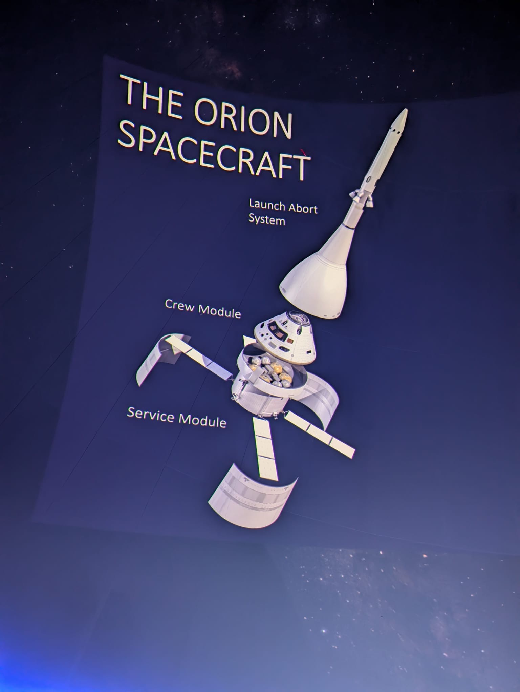

About Me
I am a high school researcher driven by a passion for exploring the cosmos through data. I specialize in building custom Python pipelines to analyze astronomical data, with a focus on exoplanet validation and circumbinary systems. I am currently preparing my research portfolio as an applicant for the Stanford SPINWIP '26 program.
Research & Projects
Automated Exoplanet Detection Pipeline: The Validation of TOI-4633 c
Status: Published | Tools: Python, Lightkurve, Astropy, MAST
Built and stress-tested a multi-level Python pipeline to detect and validate exoplanetary transits. Successfully extracted a faint signal from the binary system TOI-4633, proving the existence of a Neptune-sized candidate in a 271-day orbit. Independently calculated an Equilibrium Temperature of ~290K, verifying the planet sits within the Habitable Zone.
The Cosmic Perspective: Field Journal
Return to the Moon: The Artemis II Briefing
"To look up is humanity's oldest pastime, but to reach up is our greatest achievement. Today, I had the privilege of witnessing the culmination of that reach."
Data pipelines and light curves tell us what exists light-years away, but true space exploration requires bending metal, calculating chaotic orbital mechanics, and bringing humans safely home. Today, I attended a profound briefing at the Chabot Space Center, hearing directly from the aerospace engineers behind the Artemis II mission and the Director of NASA Ames. Watching the breakdown of the Orion spacecraft's Trans-Lunar Injection and the sheer physics of a 24,000 mph atmospheric re-entry on the dome was a stark reminder of the engineering reality that underpins all astrophysical theory. We are going back to the Moon, and this time, we are staying.





Certifications & Ongoing Studies
Amateur Radio (HAM) Technician License
Status: In Progress
Currently studying to obtain my official FCC Amateur Radio License. This pursuit is expanding my practical understanding of RF engineering, radio wave propagation, and telecommunications—vital concepts for instrumentation and deep space communication.
Technical Toolkit
- Python
- Data Analysis
- Astrophysics (Lightkurve/Astropy)
- Algorithm Optimization
- Technical Writing